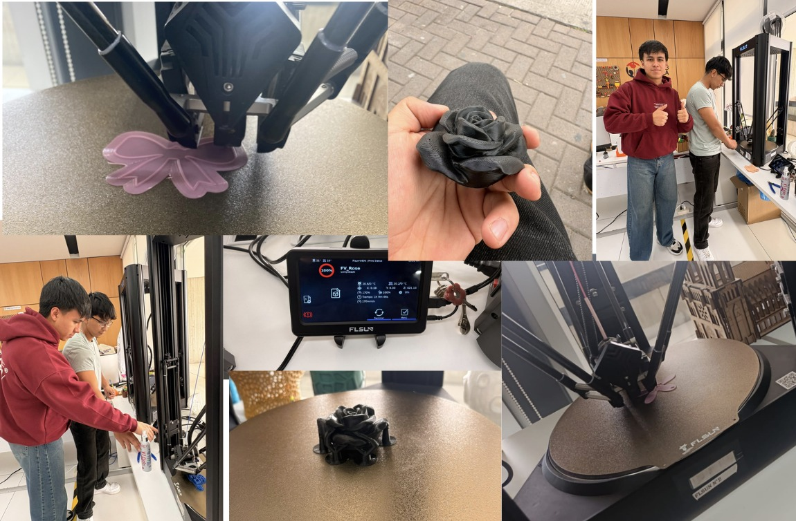

DOCUMENTACIÓN · SEMANA 03
Semana 03
Durante la tercera semana trabajamos en el diseño digital de piezas mediante Fusion 360 y en la preparación de modelos para impresión 3D utilizando Ultimaker Cura. Estas actividades nos permitieron conocer parte del proceso de fabricación aditiva, desde el diseño de una pieza hasta su preparación para la impresión.
📌 Tema de la semana
Introducción a la fabricación aditiva mediante el diseño de piezas en Fusion 360 y la preparación de modelos tridimensionales para su impresión utilizando Ultimaker Cura.
📝 Actividades realizadas
Durante esta semana comenzamos a trabajar con herramientas digitales relacionadas con el diseño y la fabricación de objetos tridimensionales. Utilizamos Fusion 360 para desarrollar modelos de piezas y explorar sus características.
Posteriormente, trabajamos con Ultimaker Cura para preparar los modelos destinados a la impresión 3D. Este proceso nos permitió conocer cómo se organiza un modelo digital antes de convertirse en una pieza física.
⚙️ Proceso de fabricación aditiva
Diseño en Fusion 360
Creamos modelos tridimensionales de piezas, explorando las herramientas de diseño y las formas necesarias para representar los objetos digitalmente.
Preparación en Cura
Utilizamos Ultimaker Cura para preparar los modelos para la impresión 3D y familiarizarnos con el entorno de configuración del proceso.
Material de impresión
Trabajamos con PLA, un material utilizado en impresión 3D, para conocer su participación en el proceso de fabricación de las piezas.
🛠️ Herramientas utilizadas
Fusion 360: herramienta de diseño asistido por computadora utilizada para crear modelos tridimensionales.
Ultimaker Cura: programa utilizado para preparar modelos digitales para su fabricación mediante impresión 3D.
Filamento PLA: material utilizado en el proceso de impresión tridimensional.
DOCUMENTACIÓN VISUAL
📷 Evidencias
Registro visual de las actividades de diseño y fabricación aditiva realizadas durante la Semana 03.

Evidencia del trabajo realizado durante la tercera semana.
🌱 Lo aprendido
Durante esta semana aprendimos sobre el uso de herramientas digitales para diseñar piezas tridimensionales y preparar modelos para impresión 3D.
También conocimos la importancia de las etapas que conectan el diseño digital con la fabricación de un objeto físico, así como el uso de programas especializados y materiales de impresión.
⚠️ Problemas y soluciones
Trabajar con herramientas de diseño y preparación para impresión 3D requiere familiarizarse con sus funciones y comprender cómo se configuran los modelos antes de fabricarlos.
Para avanzar, exploramos las herramientas de los programas utilizados y seguimos el proceso de diseño y preparación de las piezas, reforzando nuestros conocimientos sobre fabricación aditiva.